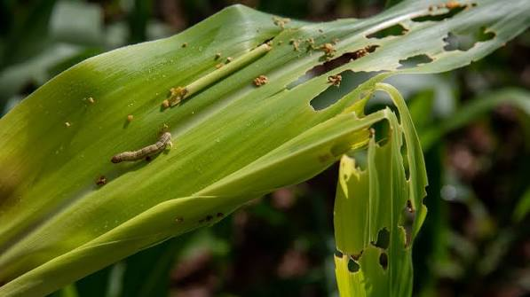

Fall Armyworm (Maize) +
Symptoms: Ragged holes on leaves, sawdust-like frass in the funnel, yellowing plants.
Eco-friendly control: Hand-pick larvae early. Apply neem-based spray. Encourage natural predators like earwigs and birds. Avoid broad-spectrum pesticides.